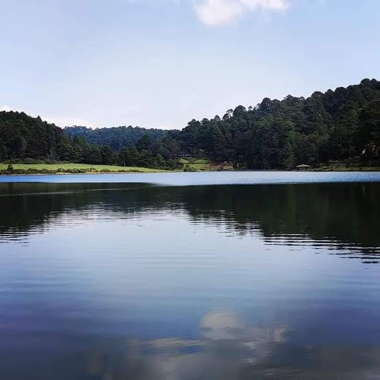
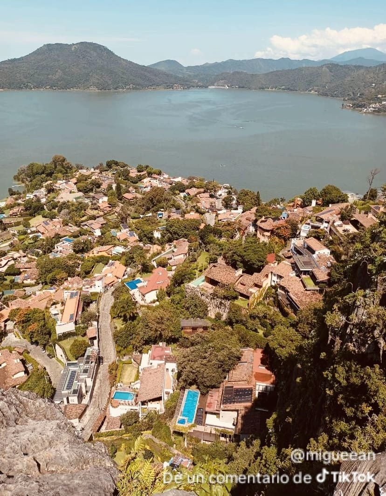

MONTE ALTO
El Parque Estatal Monte Alto es una reserva natural protegida de 2,201 metros sobre el nivel del mar ubicada en el municipio de Valle de Bravo, Estado de México.
Información General Altitud: 2,201 msnm (conocido históricamente por los matlatzincas como el Cerro de Agua). Horario del parque: Lunes a domingo de 08:00 a 17:00 hrs. Costo de entrada: $50 MXN (aproximadamente). Ubicación: Frente a San Mateo Acatitlán (Carretera Acatitlán).
Actividades Principales Vuelo libre: Es uno de los puntos de despegue más famosos para practicar parapente y ala delta. Senderismo: Cuenta con rutas populares como el ascenso a la zona de despegue y la torre del guardabosque (recorrido de ida y vuelta de 4.8 km, considerado de dificultad moderada). Ciclismo de montaña: Dispone de cerca de 20 km de senderos divididos por niveles (principiante, intermedio y avanzado). Otras actividades: Observación de aves, fotografía de paisajes, días de campo y zonas de campamento.
Puedes consultar detalles de rutas y mapas en AllTrails o revisar información oficial en el portal de la Secretaría de Cultura y Turismo del Estado de México.
¿Te gustaría saber más sobre cómo contratar un vuelo en parapente o conocer recomendaciones de equipo para senderismo en Monte Alto?
Estatal Monte Alto Monte Alto es un Parque Estatal decretado por el gobierno del Estado de México en 2013 para conservar los recursos naturales de Valle de Bravo.

LAGUNA NEGRA
La Laguna Negra es un pequeño cuerpo de agua y destino de naturaleza ubicado en una zona montañosa cerca de Valle de Bravo, Estado de México
Características principales: Ubicación y entorno: Se encuentra rodeada de un denso bosque de pinos y encinos, helechos, musgos y líquenes. El nombre: Obtiene su tono oscuro por la sombra profunda que proyectan los árboles y la propia conformación boscosa del lugar. Acceso y rutas: El camino para llegar forma parte de la experiencia; la entrada a pie por los senderos es gratuita.
Actividades recomendadas: Senderismo y trail running: Destaca el Circuito Laguna Negra, una ruta ideal para caminar bajo la sombra del bosque. También hay senderos más largos que conectan hacia zonas como Los Pozos (de aproximadamente 12.7 km con dificultad moderada).Deportes de aventura y off-road: Es un punto muy popular para realizar recorridos en bicicleta de montaña (MTB), cuatrimotos y vehículos todo terreno (como RZR) atravesando caminos de terracería y montaña.Observación de fauna: Es común escuchar al carpintero de bellota y observar ardillas grises en las copas de los árboles.
Consejos útiles para tu visita: Clima y terreno: Los caminos son de tierra con hojarasca, raíces y piedras con pendientes moderadas. En época de lluvias los senderos cerca de la orilla se ponen muy húmedos y resbalosos.Calzado y equipo: Se recomienda usar calzado cerrado con buen agarre (tipo trail o botas de senderismo), ropa cómoda y llevar suficiente agua.Tiempos: Si vas caminando el circuito corto es rápido, pero si planeas rutas largas como Laguna Negra - Los Pozos, calcula entre 3.5 a 4 horas de recorrido.

LA PEÑA
La Peña de Valle de Bravo es uno de los atractivos naturales, históricos y panorámicos más emblemáticos del Pueblo Mágico.
Datos generales y ubicación: Qué es: Un imponente monolito kárstico y rocoso (piedra caliza de millones de años) que funciona como un balcón natural.Vista: Ofrece una panorámica de 360 grados del pueblo, las montañas y la Presa Miguel Alemán (el lago). En la cima hay una gran cruz.Horarios: Lunes a viernes de 09:00 a 17:00 hrs.Sábados y domingos de 09:00 a 18:00 hrs (algunos accesos abren desde las 07:30 hrs).
Costos aproximados:Entrada: De $5 a $25 MXN por persona.Estacionamiento: Alrededor de $50 MXN (aunque también hay espacios libres en las calles cercanas).
Historia y misticismo: Origen prehispánico: Fue habitado y utilizado por los matlatzincas como centro ceremonial y espacio para rituales terapéuticos (se han encontrado vestigios de antiguos temazcales y cuevas). Leyendas del tesoro: Una de las historias locales cuenta que, tras la Independencia de México, familias españolas adineradas que habitaron la zona ocultaron y enterraron oro y joyas en las cuevas o entrañas de la peña antes de huir, un tesoro que supuestamente jamás fue encontrado.
El sendero y senderismo: Duración de la subida: De 10 a 30 minutos a pie desde el inicio de la zona boscosa/residencial (la ruta total puede extenderse según desde dónde la inicies). Dificultad: Moderada. Aunque no es un trayecto muy largo, cuenta con pendientes pronunciadas, tramos rocosos, escalones de piedra y raíces expuestas. Actividades adicionales: Además de caminar y tomar fotografías, la zona es frecuentada para practicar escalada en roca, rapel y observar la flora y fauna local (como ardillas e iguanas).
Recomendaciones útiles: Calzado: Lleva botas de senderismo o tenis con excelente tracción; el terreno es resbaladizo, especialmente si ha llovido. Hidratación y protección: Usa bloqueador solar, gorra y lleva agua suficiente. Clima: Conviene subir por la mañana para aprovechar el cielo despejado, ya que por las tardes son comunes las lluvias o chubascos en la región. Mascotas: El sendero es pet-friendly (admite perros), pero se recomienda llevar correa.
